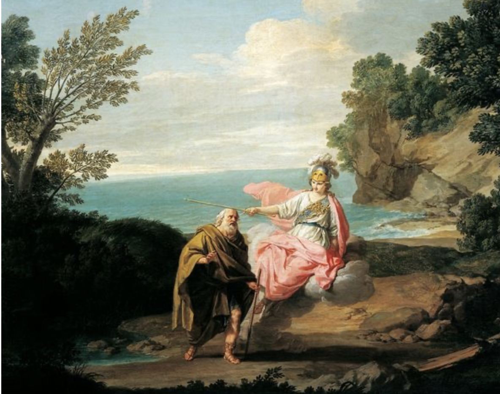
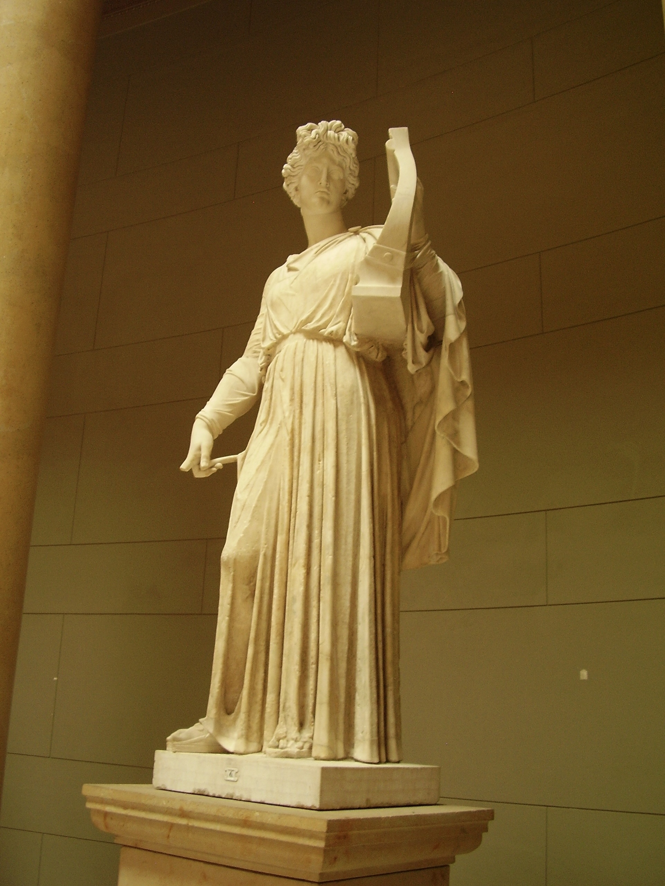
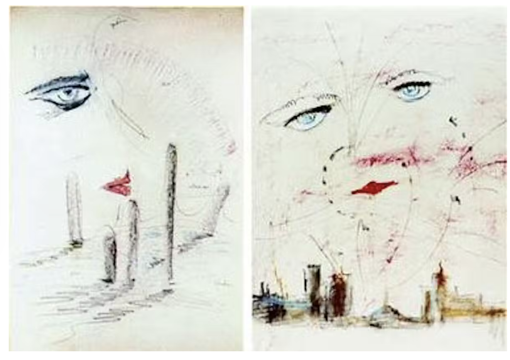
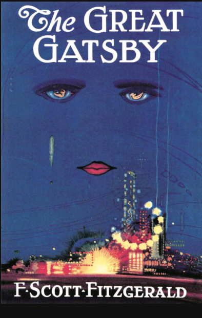

¿Está la religión presente?
ENCUENTRO
- En la historia

Estructura jerárquica
Dioses del Olimpo
Atenea
"Ya la luz se esparcía por la tierra; perocubríolos Atenea con oscura nube y los sacó de la ciudad muy prestamente."
VS.
Poseidón
"El poderoso Poseidón, que sacude la tierra, regresaba entonces de Etiopía y vio a Odiseo de lejos, desde los montes Solimos, pues se le apareció navegando por el ponto. Se encendió de ira el dios y, sacudiendo la cabeza, habló entre sí de semejante modo:
«¡Ah! Sin duda cambiaron los dioses sus propósitos con respecto a Odiseo, mientras yo me hallaba entre los etíopes. Ya está junto a la tierra de los feacios, donde está destinado que se libre del cúmulo de desgracias que le han alcanzado. Creo, no obstante, que aún habrá de sufrir no pocos males».
Dijo, y, echando mano al tridente, congregó las nubes y turbó el mar; suscitó grandes torbellinos de toda clase de vientos; cubrió de nubes la tierra y el mar, y la noche cayó del cielo. Soplaron a la vez el Euro, el Noto, el impetuoso Céfiro y el Bóreas, que, nacido en el éter, levanta grandes olas."
Canto V
Zeus
Hermes
Musa: Calíope

Fotografía realizada por Elena Coelho

"Los ojos vidriosos de Wilson se dirigieron hacia los montones de ceniza, donde nubecillas grises adquirían formas fantásticas y corrían de acá para allá con la brisa del amanecer.
- Hablé con ella -murmuró después de un largo silencio-. Le dije que a mí podía engañarme, pero que no podía engañar a Dios. La llevé a la ventana -se puso de pie con esfuerzo y fue a apoyarse en la ventana del fondo de la oficina, con la cara pegada al cristal- y le dije: <<Dios sabe lo que has hecho, todo lo que has hecho. ¡A mí puedes engañarme, pero a Dios no!>>
De pie, detrás de él, Michaelis vio con un sobresalto que Wilson miraba a los ojos del doctor T. J. Eckleburg, que acababan de emerger, enormes y pálidos, de la noche en disolución.
-Dios lo ve todo -repitió Wilson.
-Eso es un anuncio -le aseguró Michaelis."
"Wilson’s glazed eyes turned out to the ashheaps, where small gray clouds took on fantastic shapes and scurried here and there in the faint dawn wind. “‘T spoke to her,”’ he muttered, after a long silence. “T told her she might fool me but she couldn’t fool God. I took her to the window”—with an effort he got up and walked to the rear window and leaned with his face pressed against it—‘‘and I said ‘God knows what you’ve been doing, everything you’ve been doing. You may fool me, but you can’t fool God !’”
Standing behind him, Michaelis saw with a shock that he was looking at the eyes of Doctor T. J. Eckleburg, which had just emerged, pale and enormous, from the dissolving night.
“God sees everything,”’ repeated Wilson.
““That’s an advertisement,”’ Michaelis assured him."


Expresión de dolor
"Tomé conciencia en ese momento de un sonido sordo y quejumbroso que brotaba sin cesar del garaje, un sonido que, cuando nos bajamos del cupe y nos acercábamos a la puerta, se convirtió en las palabras <<Dios mío, Dios mío>>, susurradas una y otra vez en una especie de estertor."
"I became aware now of a hollow, wailing sound which issued incessantly from the garage, a sound which as we got out of the coupé and walked toward the door resolved itself into the words “Oh, my God!” uttered over and over in a gasping moan."